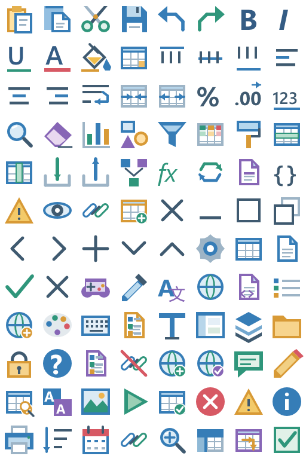
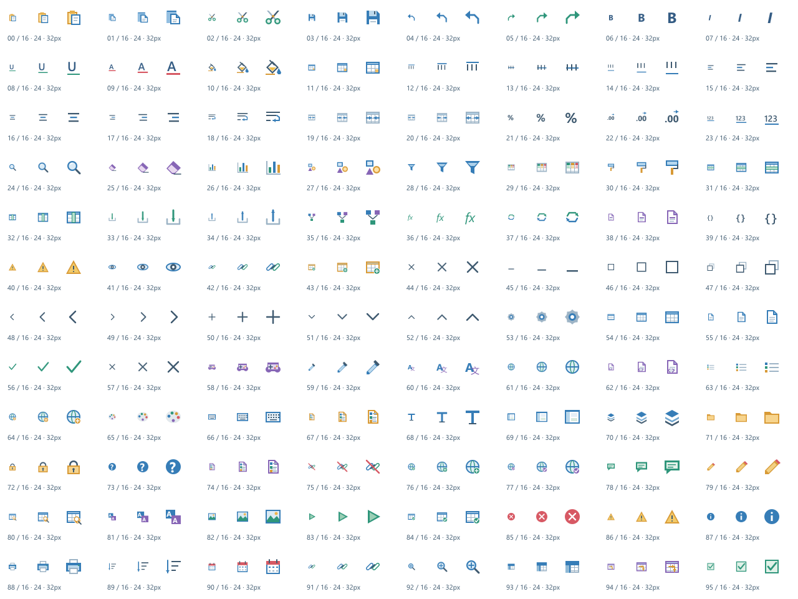

Tracefolio REPORTS & ISSUES
Tracefolio REPORTS & ISSUESAffinity 네이티브 아이콘96종 전면 교체
검증 대기96개 공통 명령 아이콘을 실제 Affinity에서 새로 제작하고 프로젝트 원본 폴더에 모았습니다.
작업 결과
컬러·화이트96종을 실제 Affinity 네이티브 벡터로 제작·저장하고 적용했습니다. Unity414검사 및 원본 재열기 픽셀 대조를 통과했습니다. 실제 Unity 리본 화면 캡처는 미실행입니다.
변경 내용
적용 내용
선 굵기만 변경한 이전 대체안을 교체했습니다. 복사·잘라내기·글꼴·정렬·표·차트·도형·설정·게임 데이터·로컬라이징·진단 등 공통96슬롯을 재설계했습니다.692개의 새 네이티브 벡터/텍스트 노드를 사용합니다. 의미 색상은 파랑·초록·주황·보라·빨강입니다. 타이틀바의 화이트 버전도 별도 Affinity 원본입니다. 기존 명령 별칭·UV·텍스처 GUID는 유지했습니다.
원본 기준 폴더: Assets/TurnRoom/Templete/Development/Art/ColorIcons. 최신 컬러·화이트 .af, 전체 PNG, Exports/Commands의96개 개별 출력, IconCatalog.json, SourceScripts와 README에 모았습니다. 런타임 복사 경로는 README에 표시했습니다. 이전 SVG 덮어쓰기 도구는 비활성화했습니다.


위 이미지는 실제 Affinity의 아트 출력입니다. Unity 리본 화면 캡처가 아닙니다.
검증
| 검사 | 실제 결과 |
|---|---|
| Affinity 앱 | 3.3.1.4940 실제 MCP 연결 |
| 네이티브 제작 | 96종·새 벡터/텍스트692개 |
| 원본 저장 | 프로젝트 내 .af 일반 저장 성공 |
| 재열기 | 닫기→다시 열기→전체 RGBA 동일 |
| 실제 출력 | NodeRenderingEngine으로 래스터화, PixelBuffer로64px 자르기 및 Affinity에서16/24/32px 축소 |
| 호스트 파일 저장 | 받은 RGBA를 수정 없이 PNG로 직렬화 |
| 컬러 변화 | 이전 대비96슬롯 모두 픽셀 변경 |
| 화이트 | 불투명 픽셀 모두 흰색 |
| Unity6000.0.83f1 batchmode | 414검사·실패0 |
| 투명도 | 96개 여백·코너 alpha 검증 |
MCP의 새 경로 saveAs/export는 PERMISSION_DENIED였습니다. 파일을 프로젝트에서 정상적으로 열고 in-place save하는 지원 방식으로 원본을 저장했습니다. Native raster engine의 메모리 출력을 사용했으며 바탕화면·권한 변경·다른 그림 도구를 쓰지 않았습니다.
남은 사항
실제 Unity 홈·컨텍스트 탭의 최종 실행 화면과9개 언어 문서 재촬영은 미실행입니다. Computer Use node_repl 도구가 이번 세션에 제공되지 않아 GUI 입력/캡처를 수행하지 않았습니다. 런타임 프로젝트 파일 아이콘의 사용자 색상 생성 경로는 기존 기능을 유지했습니다. 교훈 검토: 최신 전역 지침이 실제 Affinity 필수·실패 시 임의 대체 금지를 이미 명시하여 중복 추가 없음.
작업 시간
- 제안 시간: 최초8종10–15분 → 전체 확장25–40분 제안 → 사용자 지정20분(약21:00부터21:20 KST)
- 실제로 완료된 시간: 최초 시작2026-10-31 20:31:09 KST. 전체96종 구현·비대화형 검증 21:15:01 KST. 공개 배포 확인은 별도.
- XERJ: 사용 — XERJ TemplateIcons StatusIconTexture 검색 후 현재 원본·명령 atlas와 경로 대조